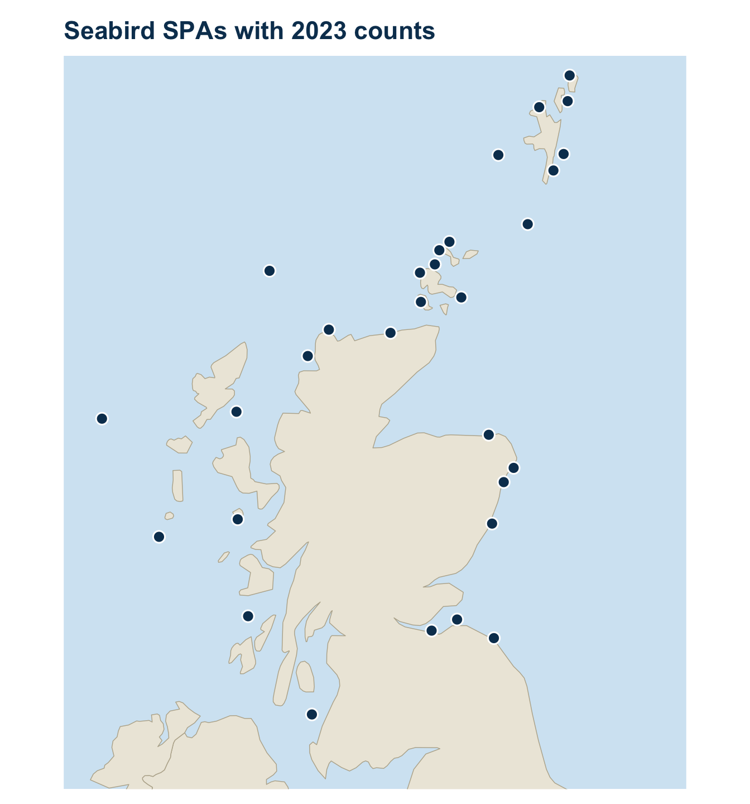

The outbreak, colony by colony
How avian influenza moved through Scotland’s seabirds, and what the 2023 counts found
Where to go next
- The full seabird deep dive has the forest plot with confidence intervals, the baseline sensitivity analysis, and every SPA result.
- The Methods page explains how the figures were checked.
Sources: colony counts from Tremlett, Morley & Wilson (2024), RSPB Research Report 76. Timing of the outbreak and Gannet mortality as reported by RSPB. Land: Natural Earth (public domain). Independent analysis by Emma Branch, not affiliated with or endorsed by RSPB, NatureScot, or JNCC.